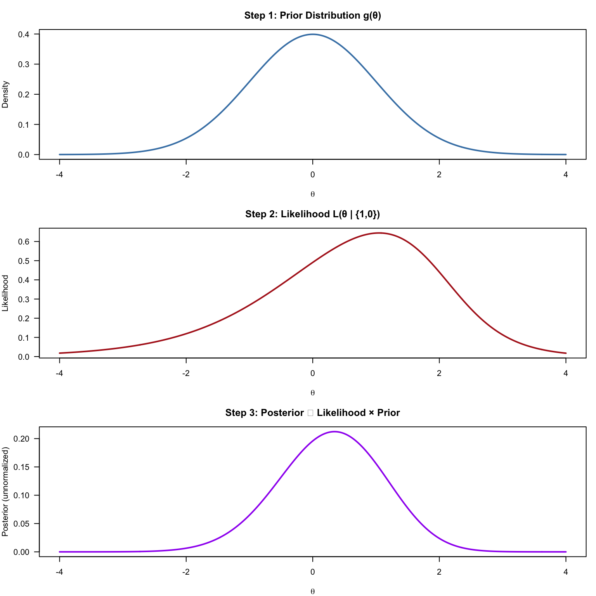
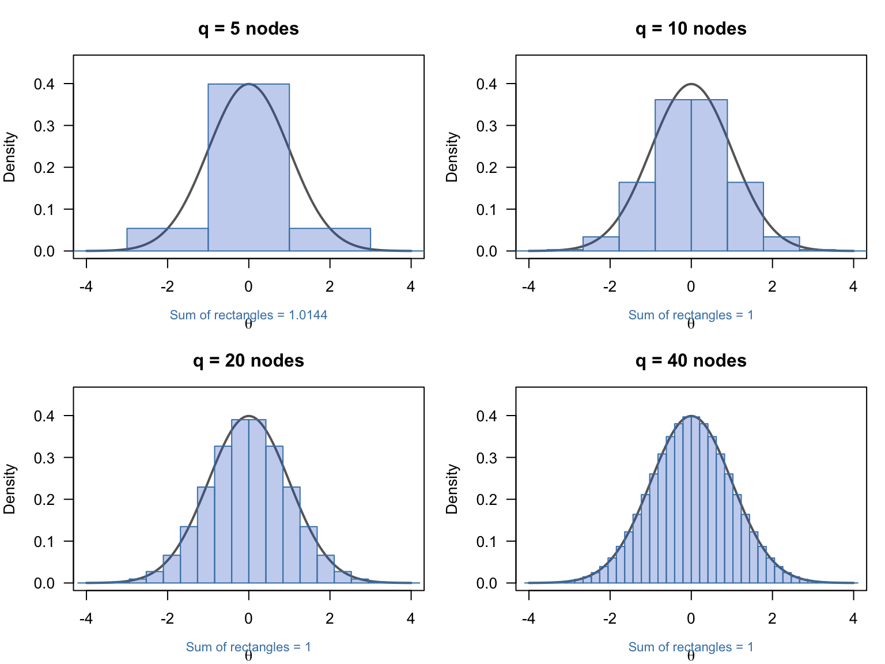
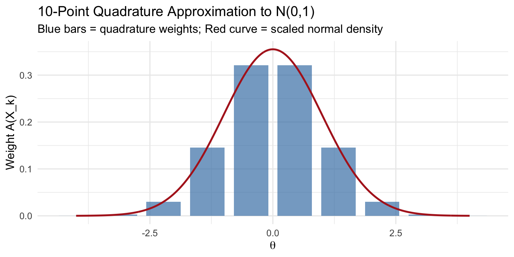
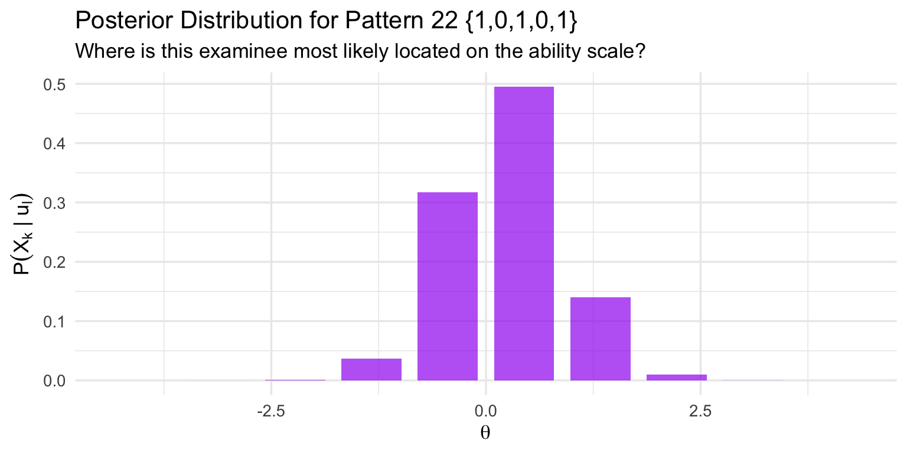
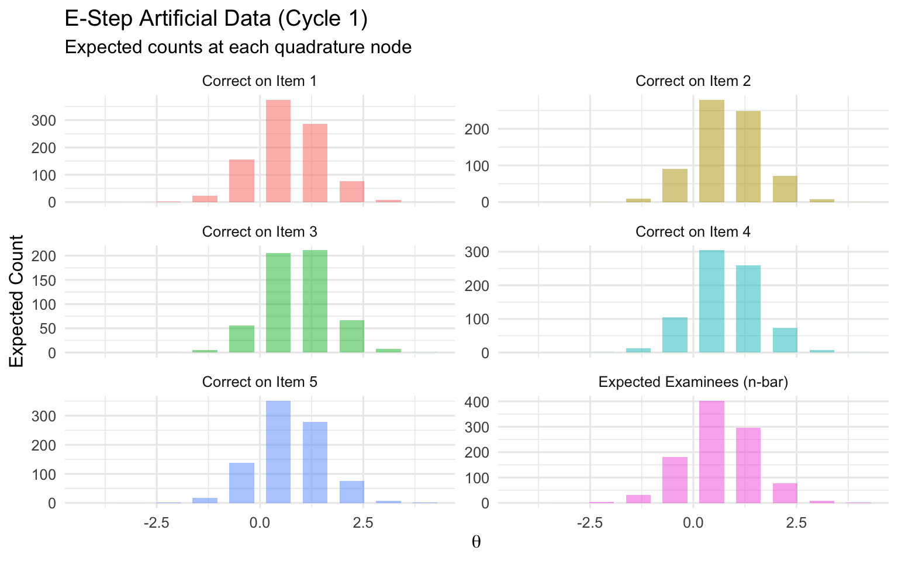
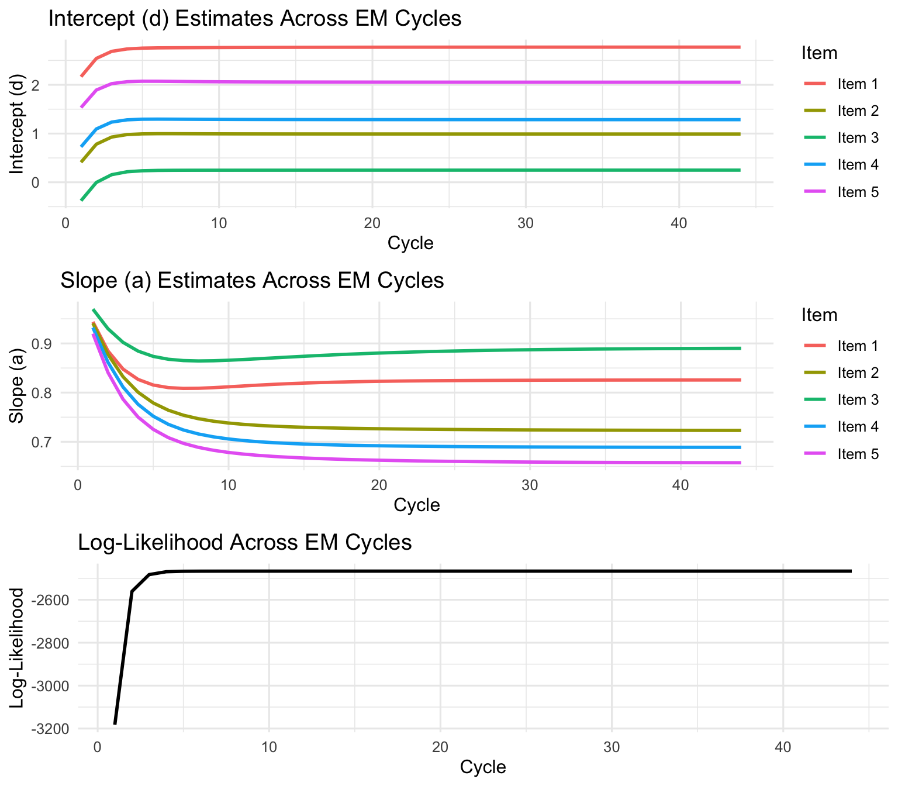
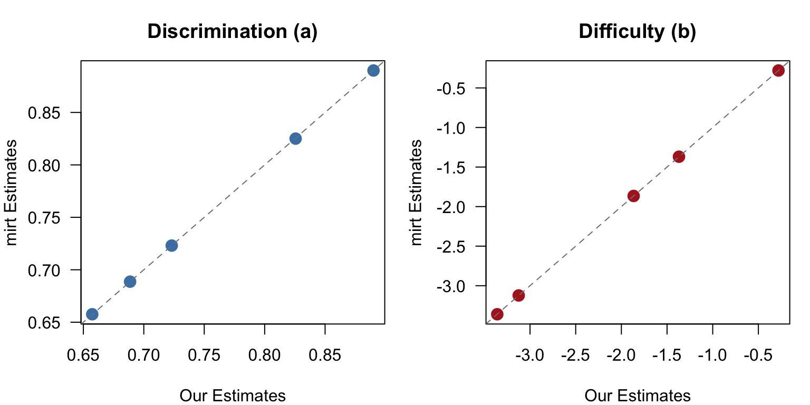
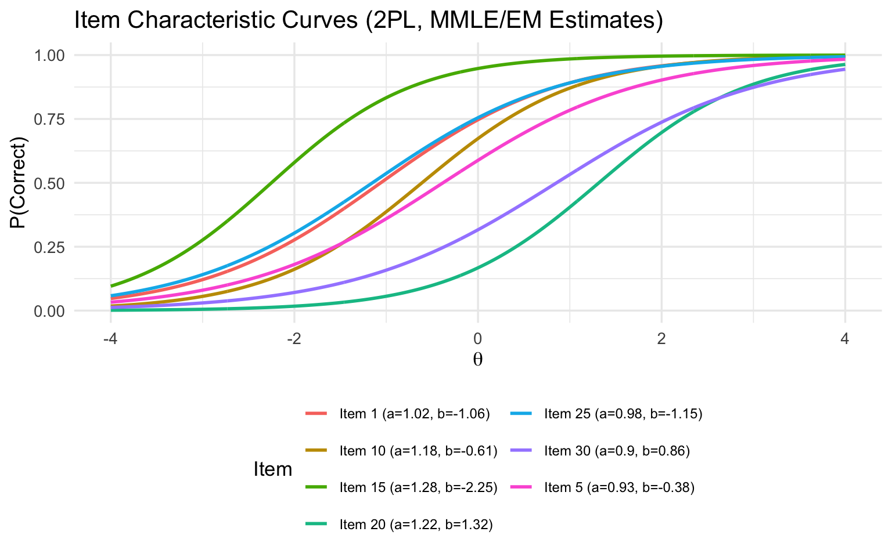

Code
library(ggplot2)
library(dplyr)
library(tidyr)
library(knitr)
library(mirt)From Intuition to Implementation
In the previous module on person parameter estimation, we saw how to estimate a person’s ability (\(\theta\)) given known item parameters. Now we tackle the other side of the coin: estimating item parameters when person abilities are unknown.
Joint Maximum Likelihood Estimation (JMLE) attempts to estimate both simultaneously, but suffers from well-known problems (the Neyman-Scott inconsistency, inflated discrimination estimates). Marginal Maximum Likelihood Estimation (MMLE) offers an elegant alternative: instead of estimating each person’s \(\theta\), we integrate over a population distribution of \(\theta\), effectively averaging out the person parameters. This yields consistent item parameter estimates regardless of sample size.
The key insight: we don’t need to know where each individual person falls on the ability scale; we only need to know how persons are distributed across the scale.
MMLE is paired with the EM (Expectation-Maximization) algorithm, an iterative procedure that alternates between:
This document walks through the entire MMLE/EM process with actual data and actual numbers, building from concepts you already know. It builds from the more technical presentation of MMLE found in Chapter 6 of Baker and Kim (2004).
library(ggplot2)
library(dplyr)
library(tidyr)
library(knitr)
library(mirt)In the person parameter estimation module, we met Thor, who takes a two-item test (Item 1: \(a = 1, b = 0\); Item 2: \(a = 2, b = 2\)) and gets the pattern {1, 0} (first item correct, second incorrect).
We computed Thor’s posterior distribution by combining a prior (our assumption about the population distribution of \(\theta\), typically standard normal) with the likelihood of his response pattern \(\mathbf{u}\), the vector of item responses (in this two-item example, \(\mathbf{u} = \{1, 0\}\)):
\[\text{Posterior}(\theta) \propto \underbrace{L(\theta \mid \mathbf{u})}_{\text{likelihood}} \times \underbrace{g(\theta)}_{\text{prior}}\]
# 2PL model
p_2pl <- function(theta, a, b) {
1 / (1 + exp(-a * (theta - b)))
}
# Item parameters
a1 <- 1; b1 <- 0
a2 <- 2; b2 <- 2
# Fine grid of theta values
theta <- seq(-4, 4, by = 0.01)
# Prior: standard normal
prior <- dnorm(theta, 0, 1)
# Thor's likelihood: P1(theta) * Q2(theta)
likelihood_thor <- p_2pl(theta, a1, b1) * (1 - p_2pl(theta, a2, b2))
# Posterior (unnormalized)
posterior_unnorm <- likelihood_thor * priorpar(mfrow = c(3, 1), mar = c(4, 4, 3, 1))
plot(theta, prior, type = "l", col = "steelblue", lwd = 2,
main = "Step 1: Prior Distribution g(\u03b8)",
xlab = expression(theta), ylab = "Density", las = 1)
plot(theta, likelihood_thor, type = "l", col = "firebrick", lwd = 2,
main = "Step 2: Likelihood L(\u03b8 | {1,0})",
xlab = expression(theta), ylab = "Likelihood", las = 1)
plot(theta, posterior_unnorm, type = "l", col = "purple", lwd = 2,
main = "Step 3: Posterior \u221d Likelihood \u00d7 Prior",
xlab = expression(theta), ylab = "Posterior (unnormalized)", las = 1)
When we use Bayes’ theorem for the posterior, the full expression is:
\[P(\theta \mid \mathbf{u}, \boldsymbol{\xi}) = \frac{L(\mathbf{u} \mid \theta, \boldsymbol{\xi}) \cdot g(\theta)}{\int L(\mathbf{u} \mid \theta, \boldsymbol{\xi}) \cdot g(\theta) \, d\theta}\]
For person estimation, we could ignore the denominator — it’s just a normalizing constant that doesn’t change where the peak is. But that denominator has a name: it is the marginal likelihood of the response pattern \(\mathbf{u}\). It tells us: how probable is this response pattern, averaged across all possible ability levels?
How do we compute this integral? One brute-force approach is to evaluate the function at a very large number of closely spaced \(\theta\) values, multiply each by the spacing between points, and sum up the results. This is called the trapezoidal rule — it’s the numerical integration equivalent of adding up lots of very thin rectangles:
# The marginal likelihood is the area under the unnormalized posterior.
# Here we approximate the integral using a "brute force" approach:
# evaluate at 801 closely spaced points (theta from -4 to 4 by 0.01)
# and sum up the tiny rectangles (trapezoidal rule).
dx <- theta[2] - theta[1] # spacing = 0.01
marginal_lik_thor <- sum(likelihood_thor * prior) * dx
cat("Number of evaluation points:", length(theta), "\n")Number of evaluation points: 801 cat("Spacing between points (dx):", dx, "\n")Spacing between points (dx): 0.01 cat("Marginal likelihood of Thor's pattern {1,0}:",
round(marginal_lik_thor, 6), "\n")Marginal likelihood of Thor's pattern {1,0}: 0.447543 # Now we can compute the actual normalized posterior
posterior_norm <- (likelihood_thor * prior) / marginal_lik_thor
cat("Area under normalized posterior:",
round(sum(posterior_norm) * dx, 4), "(should be ~1)\n")Area under normalized posterior: 1 (should be ~1)This works well when we can afford to evaluate the function at hundreds of points. But in MMLE, we need to compute this integral for every response pattern, at every EM cycle, for every set of candidate item parameters. Evaluating at 801 points each time would be extremely slow. We need a much more efficient approach — and that’s where quadrature comes in (next section).
Here is the conceptual leap:
The marginal likelihood for the full sample is:
\[L(\boldsymbol{\xi}) = \prod_{j=1}^{N} \int L(\mathbf{u}_j \mid \theta, \boldsymbol{\xi}) \cdot g(\theta \mid \boldsymbol{\tau}) \, d\theta\]
Each examinee’s contribution is the area under their own likelihood \(\times\) prior curve — the same denominator we computed for Thor above. The product is over all \(N\) examinees (or equivalently, over all unique response patterns weighted by their frequencies).
The challenge: that integral has no closed-form solution. We need a numerical approximation.
We need to evaluate integrals of the form:
\[\int_{-\infty}^{\infty} f(\theta) \cdot g(\theta) \, d\theta\]
where \(f(\theta)\) is a likelihood function and \(g(\theta)\) is the prior density. There’s no formula that gives us the answer directly — we need to approximate.
We saw one way to do this above: the trapezoidal rule, which evaluates the function at hundreds of closely spaced points (we used 801). This gives a very accurate answer but is computationally expensive. In the MMLE context, this integral must be evaluated repeatedly — for every response pattern, at every EM iteration — so efficiency matters enormously.
Quadrature takes a fundamentally different approach: instead of brute-forcing with many points, it uses a small number of strategically chosen points with carefully computed weights that are designed to capture the shape of the distribution efficiently.
The core idea: replace the integral with a weighted sum over a small number of points.
\[\int f(\theta) \cdot g(\theta) \, d\theta \approx \sum_{k=1}^{q} f(X_k) \cdot A(X_k)\]
Here \(X_k\) are the nodes (specific \(\theta\) values), \(A(X_k)\) are the weights (each reflecting how much probability mass that node represents), and \(q\) is the number of nodes — typically just 10 to 40. The weights \(A(X_k)\) already incorporate the prior density \(g(\theta)\), so we only need to evaluate the likelihood \(f(X_k)\) at each node.
Think of it as replacing the smooth curve with a bar chart — but a very efficient bar chart where the bars are placed and sized to capture the essential shape of the distribution with as few bars as possible.
| Method | Points | What you evaluate | Weights |
|---|---|---|---|
| Trapezoidal rule | Many (e.g., 801) | \(f(\theta_j) \cdot g(\theta_j)\) at each point | All equal (\(dx\) = spacing) |
| Gaussian quadrature | Few (e.g., 10) | \(f(X_k)\) at each node | Pre-computed \(A(X_k)\) that absorb \(g(\theta)\) |
# Show quadrature with different numbers of nodes
par(mfrow = c(2, 2), mar = c(4, 4, 3, 1))
for (q in c(5, 10, 20, 40)) {
# Equally spaced nodes from -4 to 4
nodes <- seq(-4, 4, length.out = q)
width <- nodes[2] - nodes[1]
weights <- dnorm(nodes) * width
weights <- weights / sum(weights) # normalize
# Plot the continuous curve
plot(theta, dnorm(theta), type = "l", lwd = 2, col = "gray40",
main = paste0("q = ", q, " nodes"),
xlab = expression(theta), ylab = "Density", las = 1,
ylim = c(0, 0.45))
# Overlay the rectangles
for (i in seq_along(nodes)) {
rect(nodes[i] - width/2, 0, nodes[i] + width/2,
dnorm(nodes[i]), col = rgb(0.2, 0.4, 0.8, 0.3),
border = "steelblue")
}
# Report approximation quality
approx_area <- sum(dnorm(nodes) * width)
mtext(paste0("Sum of rectangles = ", round(approx_area, 4)),
side = 1, line = 2.5, cex = 0.7, col = "steelblue")
}
More nodes = better approximation. In practice, 10-40 nodes are typically used.
The classic BILOG program (Baker & Kim, Appendix D) uses 10 equally spaced nodes from \(-4\) to \(+4\) with weights derived from the standard normal density:
# 10-point quadrature (from Baker & Kim / BILOG)
q <- 10
X_k <- c(-4.0, -3.1111, -2.2222, -1.3333, -0.4444,
0.4444, 1.3333, 2.2222, 3.1111, 4.0)
A_k <- c(0.000119, 0.002805, 0.03002, 0.1458, 0.3213,
0.3213, 0.1458, 0.03002, 0.002805, 0.000119)
# Verify the weights sum to 1 and are centered at 0
cat("Sum of weights:", sum(A_k), "\n")Sum of weights: 1.000088 cat("Weighted mean:", sum(X_k * A_k), "\n")Weighted mean: 1.029992e-18 cat("Weighted variance:", sum(X_k^2 * A_k), "\n")Weighted variance: 0.9998768 df_quad <- data.frame(node = X_k, weight = A_k)
ggplot(df_quad, aes(x = node, y = weight)) +
geom_col(fill = "steelblue", alpha = 0.7, width = 0.7) +
geom_line(data = data.frame(x = theta, y = dnorm(theta)),
aes(x = x, y = y * 0.89), color = "firebrick", linewidth = 1) +
labs(title = "10-Point Quadrature Approximation to N(0,1)",
subtitle = "Blue bars = quadrature weights; Red curve = scaled normal density",
x = expression(theta), y = "Weight A(X_k)") +
theme_minimal(base_size = 13)
Now the payoff: let’s verify that 10-point quadrature can match what we got earlier from the 801-point trapezoidal rule for Thor’s marginal likelihood:
# Compute Thor's likelihood at each of the 10 quadrature nodes
lik_at_nodes <- p_2pl(X_k, a1, b1) * (1 - p_2pl(X_k, a2, b2))
# Marginal likelihood via quadrature: just 10 multiplications and a sum!
marginal_lik_quad <- sum(lik_at_nodes * A_k)
cat("Thor's marginal likelihood:\n")Thor's marginal likelihood:cat(" Trapezoidal rule (801 points):", round(marginal_lik_thor, 6), "\n") Trapezoidal rule (801 points): 0.447543 cat(" Quadrature (10 points): ", round(marginal_lik_quad, 6), "\n") Quadrature (10 points): 0.447608 cat(" Relative error: ",
round(abs(marginal_lik_quad - marginal_lik_thor) / marginal_lik_thor * 100, 2), "%\n") Relative error: 0.01 %With just 10 evaluation points instead of 801, we get nearly the same answer. That’s an 80-fold reduction in computation for a trivial loss in accuracy — and this savings compounds across every response pattern and every EM cycle.
We’ll now walk through the full MMLE/EM algorithm using the LSAT-6 dataset from Bock and Lieberman (1970), also used in Baker and Kim’s textbook. This dataset has:
# All 32 possible response patterns for 5 items
patterns <- as.matrix(expand.grid(rep(list(0:1), 5))[, 5:1])
colnames(patterns) <- paste0("Item", 1:5)
# Frequency of each pattern in the LSAT-6 sample (Baker & Kim, Appendix D)
freq <- c(3, 6, 2, 11, 1, 1, 3, 4, 1, 8, 0, 16, 0, 3, 2, 15,
10, 29, 14, 81, 3, 28, 15, 80, 16, 56, 21, 173, 11, 61, 28, 298)
N <- sum(freq) # Total examinees
n_items <- 5
n_patterns <- nrow(patterns)
cat("Total examinees:", N, "\n")Total examinees: 1000 cat("Number of items:", n_items, "\n")Number of items: 5 cat("Unique response patterns:", n_patterns, "\n")Unique response patterns: 32 Let’s look at the most common patterns:
# Show top patterns by frequency
df_patterns <- data.frame(patterns, Freq = freq)
df_patterns$Pattern <- apply(patterns, 1, paste, collapse = "")
df_patterns <- df_patterns[order(-df_patterns$Freq), ]
kable(head(df_patterns[, c("Pattern", "Freq")], 10),
row.names = FALSE,
caption = "10 Most Common Response Patterns")| Pattern | Freq |
|---|---|
| 11111 | 298 |
| 11011 | 173 |
| 10011 | 81 |
| 10111 | 80 |
| 11101 | 61 |
| 11001 | 56 |
| 10001 | 29 |
| 10101 | 28 |
| 11110 | 28 |
| 11010 | 21 |
The most common pattern is {1,1,1,1,1} (all correct) with 298 examinees, suggesting these are relatively easy items.
The EM algorithm alternates between two steps:
| Step | What it does | Analogy |
|---|---|---|
| E-step | Uses current item parameter guesses to figure out how examinees are probably distributed across the ability scale | “If these were the true item parameters, where would each examinee likely fall?” |
| M-step | Uses that ability distribution to re-estimate item parameters, treating the E-step output as known data | “Given where we think examinees fall, what item parameters best fit the responses?” |
We repeat until the estimates stop changing.
We use the 2PL model with an intercept/slope parameterization:
\[P_i(\theta) = \frac{1}{1 + \exp(-(d_i + a_i\theta))}\]
where \(d_i\) is the intercept and \(a_i\) is the slope (discrimination). The usual difficulty parameter is \(b_i = -d_i / a_i\).
We start with initial guesses: all intercepts \(d_i = 0\) and all slopes \(a_i = 1\).
# 2PL probability using intercept/slope parameterization
P_icc <- function(theta, d, a) {
1 / (1 + exp(-(d + a * theta)))
}
# Initial item parameter estimates: d = 0, a = 1 for all items
d_est <- rep(0, n_items)
a_est <- rep(1, n_items)
cat("Initial estimates:\n")Initial estimates:cat("Intercepts (d):", d_est, "\n")Intercepts (d): 0 0 0 0 0 cat("Slopes (a): ", a_est, "\n")Slopes (a): 1 1 1 1 1 The E-step is the heart of MMLE. It creates two quantities for each item \(i\) at each quadrature node \(k\):
These are the “artificial data” — they play the same role as the observed frequencies in the JMLE estimation equations.
Step E1: Compute the likelihood of each response pattern at each quadrature node.
For response pattern \(l\) at node \(X_k\):
\[L_l(X_k) = \prod_{i=1}^{n} P_i(X_k)^{u_{li}} Q_i(X_k)^{1-u_{li}}\]
This is just the probability of seeing that particular pattern if the examinee’s ability were exactly \(X_k\).
# Compute L_l(X_k) for all patterns and all nodes
# This is a matrix: rows = patterns, columns = nodes
compute_L_matrix <- function(patterns, X_k, d, a) {
n_pat <- nrow(patterns)
q <- length(X_k)
L <- matrix(1, nrow = n_pat, ncol = q)
for (k in 1:q) {
for (i in 1:ncol(patterns)) {
p <- P_icc(X_k[k], d[i], a[i])
# Multiply in each item's contribution
L[, k] <- L[, k] * ifelse(patterns[, i] == 1, p, 1 - p)
}
}
return(L)
}
L_mat <- compute_L_matrix(patterns, X_k, d_est, a_est)Let’s look at a specific example. Pattern 22 is {1,0,1,0,1} (items 1, 3, 5 correct):
l <- 22 # Pattern index
cat("Pattern", l, ":", patterns[l, ], "\n")Pattern 22 : 1 0 1 0 1 cat("Frequency:", freq[l], "examinees\n\n")Frequency: 28 examineescat("Likelihood at each quadrature node:\n")Likelihood at each quadrature node:df_lik <- data.frame(
Node = 1:q,
X_k = X_k,
`L_l(X_k)` = L_mat[l, ],
check.names = FALSE
)
kable(df_lik, digits = 8, align = "c")| Node | X_k | L_l(X_k) |
|---|---|---|
| 1 | -4.0000 | 0.00000561 |
| 2 | -3.1111 | 0.00007111 |
| 3 | -2.2222 | 0.00076087 |
| 4 | -1.3333 | 0.00568600 |
| 5 | -0.4444 | 0.02214009 |
| 6 | 0.4444 | 0.03452866 |
| 7 | 1.3333 | 0.02157010 |
| 8 | 2.2222 | 0.00702097 |
| 9 | 3.1111 | 0.00159618 |
| 10 | 4.0000 | 0.00030636 |
Notice: the likelihood is tiny at extreme \(\theta\) values (it’s very unlikely an examinee at \(\theta = -4\) would get 3 out of 5 correct with all items having \(d = 0, a = 1\)).
Step E2: Compute the marginal probability of each response pattern.
\[P_l = \sum_{k=1}^{q} L_l(X_k) \cdot A(X_k)\]
This is the marginal likelihood of pattern \(l\) — the same type of integral we computed for Thor, but now using quadrature.
# P_l for each pattern: sum of L_l(X_k) * A(X_k) over nodes
P_l <- L_mat %*% A_k # matrix multiplication gives the weighted sum
# Show marginal probabilities for the 10 most common response patterns
top10_idx <- order(-freq)[1:10]
df_marg <- data.frame(
Pattern = apply(patterns[top10_idx, ], 1, paste, collapse = ""),
Freq = freq[top10_idx],
P_l = round(as.numeric(P_l[top10_idx]), 8)
)
kable(df_marg, row.names = FALSE,
col.names = c("Pattern", "Frequency", "$P_l$"),
caption = "Marginal Probabilities for the 10 Most Common Response Patterns")| Pattern | Frequency | \(P_l\) |
|---|---|---|
| 11111 | 298 | 0.0955352 |
| 11011 | 173 | 0.0360619 |
| 10011 | 81 | 0.0224199 |
| 10111 | 80 | 0.0360619 |
| 11101 | 61 | 0.0360619 |
| 11001 | 56 | 0.0224199 |
| 10001 | 29 | 0.0224199 |
| 10101 | 28 | 0.0224199 |
| 11110 | 28 | 0.0360619 |
| 11010 | 21 | 0.0224199 |
Step E3: Compute posterior probabilities at each node for each pattern.
\[P(X_k \mid \mathbf{u}_l, \boldsymbol{\xi}, \boldsymbol{\tau}) = \frac{L_l(X_k) \cdot A(X_k)}{P_l}\]
This is exactly Bayes’ theorem — the same posterior we computed for Thor, but now discretized at the quadrature nodes.
# Posterior probability matrix: rows = patterns, columns = nodes
posterior <- L_mat * matrix(A_k, nrow = n_patterns, ncol = q, byrow = TRUE)
posterior <- posterior / as.vector(P_l)
# Show the full calculation for pattern 22
cat("Posterior probabilities for pattern", l, "{1,0,1,0,1}:\n")Posterior probabilities for pattern 22 {1,0,1,0,1}:cat("P_l =", round(P_l[l], 8), "\n\n")P_l = 0.02241993 df_post <- data.frame(
Node = 1:q,
X_k = X_k,
`L_l(X_k)` = L_mat[l, ],
`A(X_k)` = A_k,
`L * A` = L_mat[l, ] * A_k,
`P_l` = rep(as.numeric(P_l[l]), q),
Posterior = posterior[l, ],
check.names = FALSE
)
kable(df_post, digits = 8, align = "c",
col.names = c("Node", "$X_k$", "$L_l(X_k)$", "$A(X_k)$",
"$L_l(X_k) \\times A(X_k)$", "$P_l$",
"$\\frac{L_l \\times A}{P_l}$ = Posterior"))| Node | \(X_k\) | \(L_l(X_k)\) | \(A(X_k)\) | \(L_l(X_k) \times A(X_k)\) | \(P_l\) | \(\frac{L_l \times A}{P_l}\) = Posterior |
|---|---|---|---|---|---|---|
| 1 | -4.0000 | 0.00000561 | 0.000119 | 0.00000000 | 0.02241993 | 0.00000003 |
| 2 | -3.1111 | 0.00007111 | 0.002805 | 0.00000020 | 0.02241993 | 0.00000890 |
| 3 | -2.2222 | 0.00076087 | 0.030020 | 0.00002284 | 0.02241993 | 0.00101879 |
| 4 | -1.3333 | 0.00568600 | 0.145800 | 0.00082902 | 0.02241993 | 0.03697690 |
| 5 | -0.4444 | 0.02214009 | 0.321300 | 0.00711361 | 0.02241993 | 0.31728951 |
| 6 | 0.4444 | 0.03452866 | 0.321300 | 0.01109406 | 0.02241993 | 0.49483018 |
| 7 | 1.3333 | 0.02157010 | 0.145800 | 0.00314492 | 0.02241993 | 0.14027339 |
| 8 | 2.2222 | 0.00702097 | 0.030020 | 0.00021077 | 0.02241993 | 0.00940098 |
| 9 | 3.1111 | 0.00159618 | 0.002805 | 0.00000448 | 0.02241993 | 0.00019970 |
| 10 | 4.0000 | 0.00030636 | 0.000119 | 0.00000004 | 0.02241993 | 0.00000163 |
Verify that the posterior probabilities sum to 1 (as they must — they represent a proper probability distribution over the quadrature nodes):
cat("Sum of posterior probabilities:", round(sum(posterior[l, ]), 6), "\n")Sum of posterior probabilities: 1 df_post_plot <- data.frame(X_k = X_k, Posterior = posterior[l, ])
ggplot(df_post_plot, aes(x = X_k, y = Posterior)) +
geom_col(fill = "purple", alpha = 0.7, width = 0.7) +
labs(title = paste0("Posterior Distribution for Pattern ", l, " {1,0,1,0,1}"),
subtitle = "Where is this examinee most likely located on the ability scale?",
x = expression(theta), y = expression(P(X[k]*" | "*u[l]))) +
theme_minimal(base_size = 13)
The posterior tells us: given the response pattern {1,0,1,0,1} and our current item parameter guesses, this examinee is most likely around \(\theta \approx 0.4\).
Step E4: Compute the artificial data (\(\bar{n}_k\) and \(\bar{r}_{ik}\)).
Now we aggregate across all examinees. Each examinee’s posterior probabilities tell us how to distribute them across the ability scale. We weight by pattern frequency \(f_l\):
\[\bar{n}_k = \sum_{l=1}^{s} f_l \cdot P(X_k \mid \mathbf{u}_l, \boldsymbol{\xi}, \boldsymbol{\tau})\]
\[\bar{r}_{ik} = \sum_{l=1}^{s} u_{li} \cdot f_l \cdot P(X_k \mid \mathbf{u}_l, \boldsymbol{\xi}, \boldsymbol{\tau})\]
\(\bar{n}_k\) is the expected number of examinees at node \(k\) (same for all items). \(\bar{r}_{ik}\) is the expected number of correct responses to item \(i\) at node \(k\).
compute_artificial_data <- function(patterns, freq, posterior, n_items, q) {
# n_bar_k: expected number of examinees at each node
n_bar <- colSums(freq * posterior)
# r_bar_ik: expected correct responses for each item at each node
r_bar <- matrix(0, nrow = n_items, ncol = q)
for (i in 1:n_items) {
r_bar[i, ] <- colSums(patterns[, i] * freq * posterior)
}
list(n_bar = n_bar, r_bar = r_bar)
}
art_data <- compute_artificial_data(patterns, freq, posterior, n_items, q)cat("Expected number of examinees at each node (n-bar):\n")Expected number of examinees at each node (n-bar):cat("(Should sum to", N, ")\n\n")(Should sum to 1000 )df_art <- data.frame(
Node = 1:q,
X_k = X_k,
n_bar = round(art_data$n_bar, 2)
)
# Add r_bar for each item
for (i in 1:n_items) {
df_art[[paste0("r_bar_", i)]] <- round(art_data$r_bar[i, ], 2)
}
kable(df_art, align = "c",
col.names = c("Node", "X_k", "n-bar",
paste0("r-bar (Item ", 1:5, ")")),
caption = "Artificial Data from E-Step (Cycle 1)")| Node | X_k | n-bar | r-bar (Item 1) | r-bar (Item 2) | r-bar (Item 3) | r-bar (Item 4) | r-bar (Item 5) |
|---|---|---|---|---|---|---|---|
| 1 | -4.0000 | 0.00 | 0.00 | 0.00 | 0.00 | 0.00 | 0.00 |
| 2 | -3.1111 | 0.15 | 0.04 | 0.01 | 0.00 | 0.01 | 0.03 |
| 3 | -2.2222 | 2.71 | 1.36 | 0.41 | 0.20 | 0.53 | 1.00 |
| 4 | -1.3333 | 31.07 | 22.10 | 9.59 | 4.94 | 11.70 | 17.98 |
| 5 | -0.4444 | 181.98 | 155.12 | 91.10 | 56.33 | 105.48 | 137.51 |
| 6 | 0.4444 | 402.31 | 374.09 | 278.74 | 205.97 | 304.10 | 351.35 |
| 7 | 1.3333 | 295.79 | 286.41 | 249.00 | 211.15 | 259.64 | 278.24 |
| 8 | 2.2222 | 77.55 | 76.48 | 71.97 | 66.50 | 73.28 | 75.54 |
| 9 | 3.1111 | 8.08 | 8.03 | 7.83 | 7.56 | 7.89 | 7.99 |
| 10 | 4.0000 | 0.36 | 0.36 | 0.35 | 0.35 | 0.36 | 0.36 |
cat("\nSum of n-bar:", round(sum(art_data$n_bar), 2), "\n")
Sum of n-bar: 1000 df_art_long <- data.frame(
X_k = rep(X_k, n_items + 1),
Count = c(art_data$n_bar, as.vector(t(art_data$r_bar))),
Type = c(rep("Expected Examinees (n-bar)", q),
rep(paste0("Correct on Item ", 1:n_items), each = q))
)
ggplot(df_art_long, aes(x = X_k, y = Count, fill = Type)) +
geom_col(position = "identity", alpha = 0.5, width = 0.6) +
facet_wrap(~ Type, scales = "free_y", ncol = 2) +
labs(title = "E-Step Artificial Data (Cycle 1)",
subtitle = "Expected counts at each quadrature node",
x = expression(theta), y = "Expected Count") +
theme_minimal(base_size = 12) +
theme(legend.position = "none")
This is the key result of the E-step. We now have, for each item, a set of “data” that mirrors what we had in the JMLE estimation equations: at each ability level \(X_k\), we know the expected number of examinees (\(\bar{n}_k\)) and the expected number of correct responses (\(\bar{r}_{ik}\)). The observed proportion correct at each node is simply \(\bar{r}_{ik} / \bar{n}_k\). The difference is that in JMLE these counts came directly from the data (using provisional \(\theta\) estimates for each person), whereas here they are expected counts derived from the posterior distribution.
Why do the \(\bar{r}_{ik}\) values differ across items when we started with identical parameters? You might notice that \(\bar{n}_k\) is the same for all items, yet the \(\bar{r}_{ik}\) columns are different. This is because \(\bar{n}_k\) depends only on the posterior probabilities (which are driven by the full response pattern and the item parameters), while \(\bar{r}_{ik}\) also depends on \(u_{li}\) — the actual observed response to item \(i\). Look back at the formula: \(\bar{r}_{ik} = \sum_l u_{li} \cdot f_l \cdot P(X_k \mid \mathbf{u}_l)\). The \(u_{li}\) term means that only examinees who answered item \(i\) correctly contribute to \(\bar{r}_{ik}\). So even though our initial guesses treat all items identically, the data break the symmetry: items that more examinees answered correctly will have larger \(\bar{r}_{ik}\) values, and this is what drives the M-step to produce different parameter estimates for each item.
# Confirm: proportion correct differs across items in the raw data
p_correct <- colSums(patterns * freq) / N
cat("Proportion correct (from raw data):\n")Proportion correct (from raw data):for (i in 1:n_items) {
cat(" Item", i, ":", round(p_correct[i], 3), "\n")
} Item 1 : 0.924
Item 2 : 0.709
Item 3 : 0.553
Item 4 : 0.763
Item 5 : 0.87 These different proportions correct are what the artificial data capture, even from the very first cycle.
The M-step treats the artificial data as if it were real and estimates item parameters using the same Newton-Raphson procedure from the JMLE approach. The beauty of the Bock-Aitkin reformulation is that each item is estimated separately.
For the 2PL model, we solve two equations for each item — one for the intercept \(d_i\) and one for the slope \(a_i\):
\[\sum_{k=1}^{q} \bar{n}_k \left[\frac{\bar{r}_{ik}}{\bar{n}_k} - P_i(X_k)\right] = 0\]
\[\sum_{k=1}^{q} \bar{n}_k \left[\frac{\bar{r}_{ik}}{\bar{n}_k} - P_i(X_k)\right] X_k = 0\]
The logic is the same as in JMLE: the term in brackets is the difference between the observed proportion correct (\(\bar{r}_{ik} / \bar{n}_k\)) and the model-predicted probability (\(P_i(X_k)\)) at each node. We seek the values of \(d_i\) and \(a_i\) that make these weighted residuals sum to zero. The second equation includes \(X_k\) as a multiplier, which is what allows us to solve for the slope in addition to the intercept.
These are the same estimation equations you’ve seen in the JML context — the difference is that the “data” (\(\bar{r}_{ik}, \bar{n}_k\)) are artificial rather than observed.
# Newton-Raphson for one item using 2PL intercept/slope parameterization
# Returns updated d and a for that item
m_step_item <- function(X_k, n_bar, r_bar_i, d_init, a_init, max_iter = 6,
tol = 0.05) {
d <- d_init
a <- a_init
for (iter in 1:max_iter) {
# Compute P_hat at each node using current estimates
P_hat <- P_icc(X_k, d, a)
W <- P_hat * (1 - P_hat)
# Observed proportion at each node
p_obs <- r_bar_i / n_bar
p_obs[n_bar == 0] <- 0 # Handle zero counts
# Residuals
V <- (p_obs - P_hat) / W
V[W < 1e-7] <- 0 # Avoid division by near-zero
# Newton-Raphson sums
nW <- n_bar * W
nWV <- n_bar * W * V
nWX <- n_bar * W * X_k
nWXV <- n_bar * W * V * X_k
nWX2 <- n_bar * W * X_k^2
SNW <- sum(nW)
SNWV <- sum(nWV)
SNWX <- sum(nWX)
SNWXV <- sum(nWXV)
SNWX2 <- sum(nWX2)
# Denominator of Newton-Raphson equations
denom <- SNW * SNWX2 - SNWX^2
if (abs(denom) < 1e-4) break
# Increments
delta_d <- (SNWV * SNWX2 - SNWXV * SNWX) / denom
delta_a <- (SNW * SNWXV - SNWX * SNWV) / denom
# Update
d <- d + delta_d
a <- a + delta_a
# Check convergence
if (abs(delta_d) <= tol & abs(delta_a) <= tol) break
# Bounds check
if (abs(d) > 30 | abs(a) > 20) break
}
return(c(d = d, a = a))
}Now let’s run the M-step for all 5 items:
# M-step: estimate parameters for each item
d_new <- numeric(n_items)
a_new <- numeric(n_items)
for (i in 1:n_items) {
result <- m_step_item(X_k, art_data$n_bar, art_data$r_bar[i, ],
d_est[i], a_est[i])
d_new[i] <- result["d"]
a_new[i] <- result["a"]
}
# Convert to difficulty parameterization
b_new <- -d_new / a_new
cat("After Cycle 1:\n")After Cycle 1:kable(data.frame(
Item = 1:5,
Intercept_d = round(d_new, 4),
Slope_a = round(a_new, 4),
Difficulty_b = round(b_new, 4)
), row.names = FALSE, caption = "Item Parameter Estimates After 1 EM Cycle")| Item | Intercept_d | Slope_a | Difficulty_b |
|---|---|---|---|
| 1 | 2.1659 | 0.9438 | -2.2949 |
| 2 | 0.4102 | 0.9410 | -0.4360 |
| 3 | -0.3787 | 0.9697 | 0.3905 |
| 4 | 0.7263 | 0.9322 | -0.7791 |
| 5 | 1.5321 | 0.9198 | -1.6658 |
Compare these to Baker & Kim’s Table (Appendix D, p. 338), which reports after cycle 1: Item 1: \(d = 2.166, a = 0.944\); Item 2: \(d = 0.410, a = 0.941\); Item 3: \(d = -0.379, a = 0.970\); Item 4: \(d = 0.726, a = 0.932\); Item 5: \(d = 1.532, a = 0.920\).
Now we iterate: use the new parameter estimates from the M-step as input to the next E-step, and repeat.
# Full EM algorithm
run_em <- function(patterns, freq, X_k, A_k, n_items,
max_cycles = 100, tol = 1e-4) {
N <- sum(freq)
q <- length(X_k)
n_patterns <- nrow(patterns)
# Initialize
d <- rep(0, n_items)
a <- rep(1, n_items)
# Storage for tracking convergence
history <- data.frame()
for (cycle in 1:max_cycles) {
# --- E-step ---
# Compute likelihood matrix
L_mat <- compute_L_matrix(patterns, X_k, d, a)
# Marginal probabilities
P_l <- L_mat %*% A_k
# Posterior probabilities
posterior <- L_mat * matrix(A_k, nrow = n_patterns, ncol = q, byrow = TRUE)
posterior <- posterior / as.vector(P_l)
# Artificial data
art <- compute_artificial_data(patterns, freq, posterior, n_items, q)
# Compute log-likelihood
loglik <- sum(freq * log(pmax(P_l, 1e-300)))
# --- M-step ---
d_old <- d
a_old <- a
for (i in 1:n_items) {
result <- m_step_item(X_k, art$n_bar, art$r_bar[i, ], d[i], a[i])
d[i] <- result["d"]
a[i] <- result["a"]
}
# Record history
for (i in 1:n_items) {
history <- rbind(history, data.frame(
Cycle = cycle, Item = i,
d = d[i], a = a[i], b = -d[i]/a[i],
LogLik = loglik
))
}
# Check convergence
max_change <- max(abs(c(d - d_old, a - a_old)))
if (max_change < tol & cycle > 5) break
}
list(d = d, a = a, b = -d/a, history = history, n_cycles = cycle)
}
# Run the EM algorithm
em_result <- run_em(patterns, freq, X_k, A_k, n_items, max_cycles = 100)
cat("Converged after", em_result$n_cycles, "cycles\n\n")Converged after 44 cyclescat("Final estimates:\n")Final estimates:kable(data.frame(
Item = 1:5,
Intercept_d = round(em_result$d, 4),
Slope_a = round(em_result$a, 4),
Difficulty_b = round(em_result$b, 4)
), row.names = FALSE, caption = "Final MMLE/EM Item Parameter Estimates")| Item | Intercept_d | Slope_a | Difficulty_b |
|---|---|---|---|
| 1 | 2.7732 | 0.8256 | -3.3588 |
| 2 | 0.9903 | 0.7231 | -1.3695 |
| 3 | 0.2491 | 0.8901 | -0.2798 |
| 4 | 1.2848 | 0.6887 | -1.8657 |
| 5 | 2.0535 | 0.6573 | -3.1239 |
One of the informative aspects of the EM algorithm is watching the parameter estimates evolve across cycles:
hist_df <- em_result$history
hist_df$Item <- factor(hist_df$Item, labels = paste("Item", 1:5))
p1 <- ggplot(hist_df, aes(x = Cycle, y = d, color = Item)) +
geom_line(linewidth = 1) +
labs(title = "Intercept (d) Estimates Across EM Cycles",
y = "Intercept (d)") +
theme_minimal(base_size = 12) +
theme(legend.position = "right")
p2 <- ggplot(hist_df, aes(x = Cycle, y = a, color = Item)) +
geom_line(linewidth = 1) +
labs(title = "Slope (a) Estimates Across EM Cycles",
y = "Slope (a)") +
theme_minimal(base_size = 12) +
theme(legend.position = "right")
p3 <- ggplot(hist_df[hist_df$Item == "Item 1", ],
aes(x = Cycle, y = LogLik)) +
geom_line(linewidth = 1, color = "black") +
labs(title = "Log-Likelihood Across EM Cycles",
y = "Log-Likelihood") +
theme_minimal(base_size = 12)
gridExtra::grid.arrange(p1, p2, p3, ncol = 1)
Notice that the EM algorithm converges slowly — this is a well-known characteristic. The parameters change rapidly in the first few cycles but then creep toward their final values. Production software (like BILOG or mirt) uses acceleration techniques to speed this up.
mirtNow let’s verify our hand-coded results against the mirt package, which uses the same MMLE/EM approach but with production-grade optimizations.
# Reconstruct the full response matrix from patterns and frequencies
resp_matrix <- patterns[rep(1:n_patterns, freq), ]
colnames(resp_matrix) <- paste0("Item", 1:5)
# Fit 2PL model with mirt
# Use EM algorithm to match our approach
mod_2pl <- mirt(data.frame(resp_matrix), model = 1, itemtype = "2PL",
method = "EM", verbose = FALSE)
# Extract parameters in slope/intercept form
mirt_pars <- coef(mod_2pl, IRTpars = FALSE, simplify = TRUE)$items
mirt_irt <- coef(mod_2pl, IRTpars = TRUE, simplify = TRUE)$items
cat("Comparison of estimates:\n\n")Comparison of estimates:comp_df <- data.frame(
Item = 1:5,
Our_a = round(em_result$a, 4),
mirt_a = round(mirt_pars[, "a1"], 4),
Our_d = round(em_result$d, 4),
mirt_d = round(mirt_pars[, "d"], 4),
Our_b = round(em_result$b, 4),
mirt_b = round(mirt_irt[, "b"], 4)
)
kable(comp_df,
col.names = c("Item", "Our a", "mirt a", "Our d", "mirt d",
"Our b", "mirt b"),
caption = "Our MMLE/EM vs. mirt Package Estimates")| Item | Our a | mirt a | Our d | mirt d | Our b | mirt b | |
|---|---|---|---|---|---|---|---|
| Item1 | 1 | 0.8256 | 0.8251 | 2.7732 | 2.7728 | -3.3588 | -3.3607 |
| Item2 | 2 | 0.7231 | 0.7231 | 0.9903 | 0.9903 | -1.3695 | -1.3696 |
| Item3 | 3 | 0.8901 | 0.8900 | 0.2491 | 0.2491 | -0.2798 | -0.2799 |
| Item4 | 4 | 0.6887 | 0.6887 | 1.2848 | 1.2849 | -1.8657 | -1.8657 |
| Item5 | 5 | 0.6573 | 0.6576 | 2.0535 | 2.0536 | -3.1239 | -3.1230 |
par(mfrow = c(1, 2), mar = c(4, 4, 3, 1))
# Discrimination comparison
plot(em_result$a, mirt_pars[, "a1"], pch = 19, col = "steelblue", cex = 1.5,
xlab = "Our Estimates", ylab = "mirt Estimates",
main = "Discrimination (a)", las = 1)
abline(0, 1, lty = 2, col = "gray50")
# Difficulty comparison
plot(em_result$b, mirt_irt[, "b"], pch = 19, col = "firebrick", cex = 1.5,
xlab = "Our Estimates", ylab = "mirt Estimates",
main = "Difficulty (b)", las = 1)
abline(0, 1, lty = 2, col = "gray50")
Any differences reflect implementation details: mirt uses more quadrature points by default (61 vs. our 10), updates the quadrature weights between cycles, and uses the Bock-Aitkin acceleration method. The estimates should be in the same ballpark.
Let’s apply MMLE to the same CDE math data used in the person parameter estimation module:
cde <- read.csv("/Users/briggsd/Library/CloudStorage/Dropbox/Courses/EDUC 8720/Data Sets/MASC-CDE/cde_subsample_math.csv")
cat("CDE data:", nrow(cde), "students,", ncol(cde), "items\n")CDE data: 1500 students, 31 items# Fit 2PL model
mod_cde <- mirt(cde, model = 1, itemtype = "2PL", method = "EM", verbose = FALSE)
# Extract IRT parameters
cde_pars <- coef(mod_cde, IRTpars = TRUE, simplify = TRUE)$items
# Display
kable(round(cde_pars[, c("a", "b")], 3),
caption = "2PL Item Parameter Estimates for CDE Math Data (MMLE/EM)")| a | b | |
|---|---|---|
| V1 | 1.021 | -1.060 |
| V2 | 0.783 | -1.311 |
| V3 | 1.424 | -0.585 |
| V4 | 1.204 | -1.020 |
| V5 | 0.934 | -0.382 |
| V6 | 0.867 | 0.034 |
| V7 | 0.714 | -0.656 |
| V8 | 0.926 | -0.051 |
| V9 | 1.966 | -0.847 |
| V10 | 1.184 | -0.611 |
| V11 | 1.182 | -1.480 |
| V12 | 1.935 | -1.026 |
| V13 | 1.126 | -1.492 |
| V14 | 0.761 | -0.233 |
| V15 | 1.285 | -2.251 |
| V16 | 2.092 | -1.497 |
| V17 | 1.032 | -1.001 |
| V18 | 0.784 | -0.614 |
| V19 | 1.514 | -1.372 |
| V20 | 1.218 | 1.316 |
| V21 | 1.265 | -0.582 |
| V22 | 1.122 | -0.584 |
| V23 | 0.347 | -0.120 |
| V24 | 0.941 | -0.094 |
| V25 | 0.978 | -1.151 |
| V26 | 1.504 | 0.640 |
| V27 | 1.003 | 0.209 |
| V28 | 0.636 | 0.544 |
| V29 | 0.998 | 1.623 |
| V30 | 0.901 | 0.855 |
| V31 | 0.507 | 1.901 |
# Plot ICCs for a selection of items
theta_plot <- seq(-4, 4, by = 0.01)
# Pick items with varied characteristics
items_to_plot <- c(1, 5, 10, 15, 20, 25, 30)
items_to_plot <- items_to_plot[items_to_plot <= nrow(cde_pars)]
icc_data <- do.call(rbind, lapply(items_to_plot, function(j) {
a_j <- cde_pars[j, "a"]
b_j <- cde_pars[j, "b"]
data.frame(
theta = theta_plot,
P = p_2pl(theta_plot, a_j, b_j),
Item = paste0("Item ", j, " (a=", round(a_j, 2), ", b=", round(b_j, 2), ")")
)
}))
ggplot(icc_data, aes(x = theta, y = P, color = Item)) +
geom_line(linewidth = 1) +
labs(title = "Item Characteristic Curves (2PL, MMLE/EM Estimates)",
x = expression(theta), y = "P(Correct)") +
theme_minimal(base_size = 13) +
theme(legend.position = "bottom", legend.text = element_text(size = 9)) +
guides(color = guide_legend(ncol = 2))
MMLE/EM Algorithm Summary
=========================
1. INITIALIZE: Set starting values for all item parameters (d, a)
2. E-STEP ('Expectation'):
- For each response pattern, compute the likelihood at each quadrature node
- Use Bayes' theorem to get the posterior distribution at each node
- Aggregate across all examinees to get the 'artificial data':
* n-bar_k = expected number of examinees at node k
* r-bar_ik = expected number correct on item i at node k
3. M-STEP ('Maximization'):
- For each item separately:
* Treat (n-bar_k, r-bar_ik) as known data (just like observed counts in JMLE)
* Use Newton-Raphson to find item parameters that best fit this data
4. CONVERGED? If parameters have stopped changing, stop. Otherwise, go to step 2.What MMLE does differently from JMLE:
What the EM algorithm does:
Practical notes:
| Feature | Detail |
|---|---|
| Pros | Works for 1PL, 2PL, 3PL, and multidimensional models; consistent estimates; better SEs than JMLE |
| Cons | Requires pre-specifying the \(\theta\) distribution (though robust to mild violations); computationally intensive; can converge slowly |
Default in mirt |
Uses EM with 61 quadrature points; \(N(0,1)\) prior; Bock-Aitkin acceleration |
| No person estimates | MMLE only produces item parameters. Person \(\theta\) estimates require a separate step (MLE, MAP, or EAP — covered in the person estimation module) |
R version: R version 4.5.2 (2025-10-31) mirt version: 1.45.1 This appendix shows where the two M-step equations come from for students who want to see the calculus. You do not need this material to understand the rest of the document — the main text explains what the equations do; this section explains why they take the form they do.
We are using the 2PL with intercept/slope parameterization:
\[P_i(\theta) = \frac{1}{1 + \exp(-(d_i + a_i\theta))}\]
After the E-step, we have the artificial data \(\bar{r}_{ik}\) (expected correct responses) and \(\bar{n}_k\) (expected examinees) at each quadrature node \(X_k\). The log-likelihood for item \(i\), treating this artificial data as known, is:
\[\log L_i = \sum_{k=1}^{q} \left[\bar{r}_{ik} \log P_i(X_k) + (\bar{n}_k - \bar{r}_{ik}) \log Q_i(X_k)\right]\]
We want to find the values of \(d_i\) and \(a_i\) that maximize this. The standard approach is to take the partial derivatives with respect to each parameter, set them equal to zero, and solve.
The ICC depends on \(d_i\) and \(a_i\) only through the linear combination \(d_i + a_i X_k\). By the chain rule:
\[\frac{\partial P_i(X_k)}{\partial d_i} = P_i(X_k)\, Q_i(X_k) \cdot \frac{\partial}{\partial d_i}(d_i + a_i X_k) = P_i(X_k)\, Q_i(X_k) \cdot 1\]
\[\frac{\partial P_i(X_k)}{\partial a_i} = P_i(X_k)\, Q_i(X_k) \cdot \frac{\partial}{\partial a_i}(d_i + a_i X_k) = P_i(X_k)\, Q_i(X_k) \cdot X_k\]
The two derivatives are identical except for the trailing factor: 1 for the intercept, \(X_k\) for the slope. This is the only reason the two estimation equations differ.
Taking the partial derivative of \(\log L_i\) with respect to \(d_i\):
\[\frac{\partial \log L_i}{\partial d_i} = \sum_{k=1}^{q} \left[\bar{r}_{ik} \cdot \frac{1}{P_i(X_k)} \cdot \frac{\partial P_i}{\partial d_i} + (\bar{n}_k - \bar{r}_{ik}) \cdot \frac{1}{Q_i(X_k)} \cdot \left(-\frac{\partial P_i}{\partial d_i}\right)\right]\]
Substituting \(\frac{\partial P_i}{\partial d_i} = P_i Q_i\):
\[= \sum_{k=1}^{q} \left[\bar{r}_{ik} \cdot \frac{P_i Q_i}{P_i} - (\bar{n}_k - \bar{r}_{ik}) \cdot \frac{P_i Q_i}{Q_i}\right]\]
\[= \sum_{k=1}^{q} \left[\bar{r}_{ik}\, Q_i - (\bar{n}_k - \bar{r}_{ik})\, P_i\right]\]
\[= \sum_{k=1}^{q} \left[\bar{r}_{ik}\, Q_i - \bar{n}_k P_i + \bar{r}_{ik}\, P_i\right]\]
\[= \sum_{k=1}^{q} \left[\bar{r}_{ik}(Q_i + P_i) - \bar{n}_k P_i\right]\]
Since \(Q_i + P_i = 1\):
\[= \sum_{k=1}^{q} \left[\bar{r}_{ik} - \bar{n}_k P_i(X_k)\right]\]
Setting this equal to zero gives the intercept estimation equation:
\[\sum_{k=1}^{q} \bar{n}_k \left[\frac{\bar{r}_{ik}}{\bar{n}_k} - P_i(X_k)\right] = 0\]
The derivation is identical, except that \(\frac{\partial P_i}{\partial a_i} = P_i Q_i \cdot X_k\). The extra \(X_k\) carries through every line, giving:
\[\frac{\partial \log L_i}{\partial a_i} = \sum_{k=1}^{q} \left[\bar{r}_{ik} - \bar{n}_k P_i(X_k)\right] \cdot X_k\]
Setting this equal to zero gives the slope estimation equation:
\[\sum_{k=1}^{q} \bar{n}_k \left[\frac{\bar{r}_{ik}}{\bar{n}_k} - P_i(X_k)\right] X_k = 0\]
Both equations say: the weighted residuals (observed proportion minus predicted probability) must sum to zero. The first equation ensures the overall level is right (intercept). The second equation ensures the trend across the ability scale is right (slope) — which is why it is weighted by \(X_k\).
If you have seen ordinary logistic regression, this is the same logic: the score equation for the intercept has no covariate multiplier, while the score equation for the slope is multiplied by the covariate value. Here, the “covariate” is the quadrature node \(X_k\).
Baker, F. B., & Kim, S.-H. (2004). Item response theory: Parameter estimation techniques (2nd ed.). Marcel Dekker.